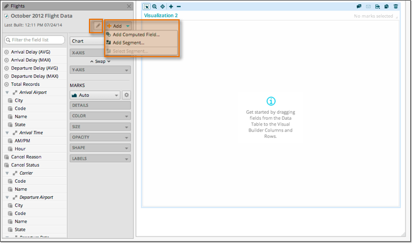

There may be times when you need to modify, supplement, or enhance the data in a lens
in order to answer a particular question or perform a certain kind of analysis. Using the
data available in the October 2012 Flight Data lens, we will segment, combine, and
manipulate the data to achieve the results we want.
After selecting a lens in a vizboard, you can supplement the data in that lens by
selecting one of the available actions from the lens menu. The choices are:
- Edit Lens
-
Open the lens builder and request additional fields from the source data.
You must have edit permission on the lens, and be an Analyst role or above
to edit a lens.
- Add Computed Field - Derive new field values by doing
additional computations in the vizboard. Vizboard computed fields are only
available in the vizboard in which they are defined.
- Add Segment - Define a segment based on dimension
members that share common characteristics and behaviors. Segments are
available to any lens that reference the same dataset that the segment is
based on.
- Select Segment - Import an existing segment into the
current lens for analysis.
